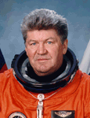

Lyndon B. Johnson Space Center
Houston, Texas 77058
|
National Aeronautics and Space Administration Lyndon B. Johnson Space Center Houston, Texas 77058 |
 |
Biographical Data |
||
Valery Victorovitch Ryumin
Russian Cosmonaut
PERSONAL DATA: Born August 16, 1939 in the city of Komsomolsk-on-Amur in the Russian Far East. Married. Has two daughters and a son. His hobbies include tennis, angling, hunting, walking through forests, and travel.
EDUCATION: In 1958, he was graduated from the Kaliningrad Mechanical Engineering Technical College with the specialty "Cold Working of Metal." In 1966, he was graduated from the Department of Electronics and Computing Technology of the Moscow Forestry Engineering Institute with the specialty "Spacecraft Control Systems."
SPECIAL HONORS: Ryumin has been decorated twice as Hero of the Soviet Union, and has been awarded other Russian and foreign decorations.
EXPERIENCE: From 1958 to 1961, Ryumin served in the army as a tank commander.
From 1966 to the present, he has been employed at the Rocket Space Corporation Energia, holding the positions of: Ground Electrical Test Engineer, Deputy Lead Designer for Orbital Stations, Department Head, and Deputy General Designer for Testing. He helped develop and prepare all orbital stations, beginning with Salyut-1.
In 1973, he joined the RSC Energia cosmonaut corps. A veteran of three space flights, Ryumin has logged a total of 362 days in space. In 1977, he spent 2 days aboard Soyuz-25, in 1979, he spent 175 days aboard Soyuz vehicles and the Salyut-6 space station, and in 1980, he spent 185 days aboard Soyuz vehicles and the Salyut-6 space station.
From 1981 to 1989, Ryumin was flight director for the Salyut-7 space station and the Mir space station. Since 1992, he has been the Director of the Russian portion of the Shuttle-Mir and NASA-Mir program.
In January 1998, NASA announced Ryumin's selection to the crew of STS-91. Ryumin served aboard STS-91 Discovery (June 2-12, 1998) the 9th and final Shuttle-Mir docking mission, concluding the joint U.S./Russian Phase I Program. The STS-91 mission was accomplished in 154 Earth orbits, traveling 3.8 million miles in 235 hours and 54 seconds.
JULY 1998